Presentation
Open in new tabPresentation Topics
- Introduction
- GIS
- Essential question
- Using GIS to analyze Lab 2
- Geoprocessing
- Video: Buffer & Clip (7 min)
- Video: Project a vector layer (4 min)
- Video: Merge & Hillshade (7 min)
- Video: Intro to Remote Sensing (2 min)
- Video: Attribute Joins (6 min)
- Using GIS to analyze Lab 2
- Tasks
- Lab
Task
Maps are literally everywhere. From outdoor wayfinding to decoration, they are so common that we often don’t even notice them. In your first task for credit, you will explore the ubiquity of maps in our built environment and describe one. This is a popular past time among map nerds – just do a search on your favorite social media for the hashtag #mapsinthewild.
You’ll need to explore your favorite places to find these maps. They are not printed maps that you buy for traveling (they still make those?) or pick up from tourism hosts. These maps are found in public places on signs, walls, floors, computer screens, etc.
- Find a map in the wild and photograph it. Make sure to include the entire map and that the photo is well-lit and clear.
- Write a brief paragraph for each of the following prompts:
-
Describe the map and it’s context. What is its purpose and audience? Why is it there?
-
How would you characterize it’s style? For example, what colors, fonts, and symbols are used? Is it a 2D or 3D map? Is it interactive?
-
Is the map effective in its context? What works and doesn’t work well?
Submitting the task
Upload your photo and text to the Module 3 discussion board on Canvas by the published due date. (2 points for the photograph and 1 point for each response.)
Lab
This lab introduces GIS, geographic information systems. Our goals are to get familiar with organizing and visualizing various spatial layers in QGIS, and begin formulating questions about our surroundings. You will not be making a finished map in this lab, but you will be creating a map that you can use in the field similar to our last module.
Table of Contents
Introduction
One of the fundamental questions asked in a GIS is: how much of x is in, or near, y? For example, how many people are within walking distance of a grocery store? What percentage of the city area is covered by impervious surfaces, e.g., roads, parking lots, etc? Which watersheds in eastern Kentucky have the most surface mining impact?
Answers to these questions are often used to make important decisions in public and environmental policy. While we will not endeavor to answer such questions in this lab, we will begin to explore the data and tools needed to do so. The approach is simple to understand: we overlay two or more layers of data in a GIS and then observe (and then measure) where features overlap, or are nearby.
In our lab example, we will focus on Kentucky and use layers for state parks, county population, and elevation. As we explore these layers in QGIS, we’ll wear our GIS hats and ask questions about spatial patterns in the state. In the next module, we’ll don our cartographer hats to best visualize the data.
Accessing the project and data
Begin by downloading the prebuilt QGIS project file and data, both stored in a zipped folder.
- Create a new folder called
lab-03in the course folder you created in the first lab. - Download the Kentucky_explorer.zip file and move the file to this newly created folder.
- Unzip the file. On macOS, you can double-click the file to unzip it. On Windows, right-click the file and select Extract All….
You should now have a folder called Kentucky_explorer with a QGIS project file and several data files. You should see the following files:
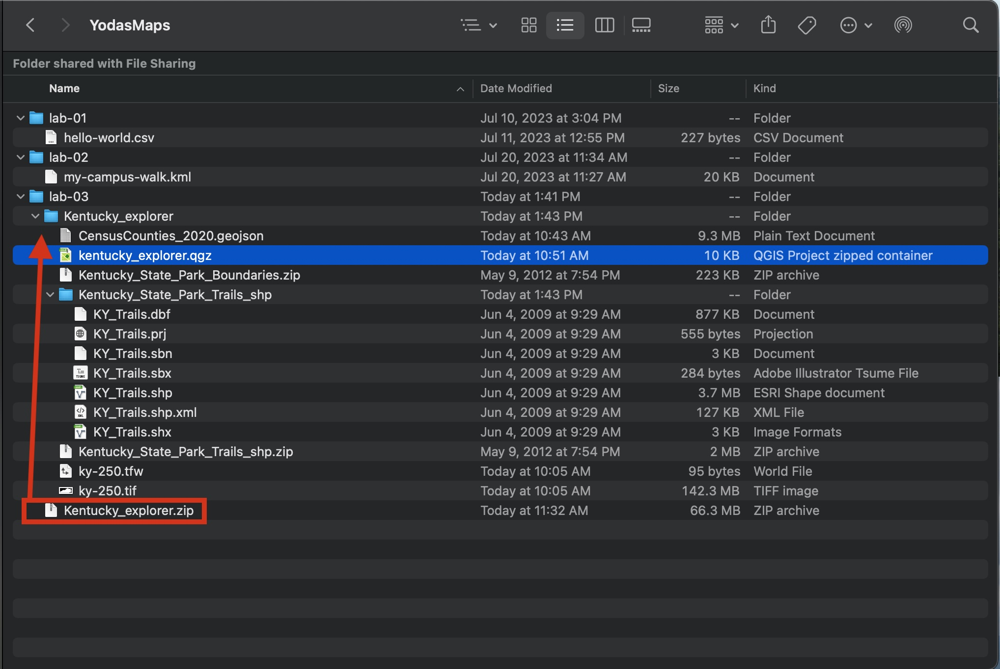
Contents of the Kentucky_explorer folder
Let’s take a moment to explore the contents of this folder. The QGIS project file is called Kentucky_explorer.qgz. This file contains the map layers, their symbology, and the map extent. However, the project file does not embed the other map layers. Instead, it references them by their file path. This is a common approach in GIS because it allows us to share the project file without having to share the data, which can be very large. So, we think of a map project as a collection of files in a folder.
The other files in the folder are spatial layers that you’ll add to the map. They are:
- CensusCounties_2020.geojson – Kentucky county polgons with population data from the 2020 Census. The format is GeoJSON, a popular format for sharing spatial data on the web.
- Kentucky_State_Park_Boundaries.zip – Kentucky state park polygons. The format is a zipped Shapefile. This format can be added directly to QGIS.
- Kentucky_State_Park_Trails_shp.zip – Kentucky state park trails. The format is a zipped Shapefile. (Note: A folder with the same name shows the contents of the zipped file.)
- ky-250.tif – Kentucky elevation raster showing elevation in feet above sea level. The format is a TIFF file, a popular raster format. The ky-250.tfw is a called a worldfile and allows QGIS to properly register the layer.
OK! If you see these files in your folder, you are ready to begin – and the hardest part is behind you. If you delete or lose this folder or its files, try redownloading the zip file and follow the first lab’s instructions for setting up your course folder.
Viewing layers in QGIS
Let’s open the QGIS project file and explore the layers. The elevation has already been added for you, but you might not see it at first.
- Double-click the Kentucky_explorer.qgz file to open it in QGIS.
- Right-click the ky-250 layer and select Zoom to Layer.
You should see the following:
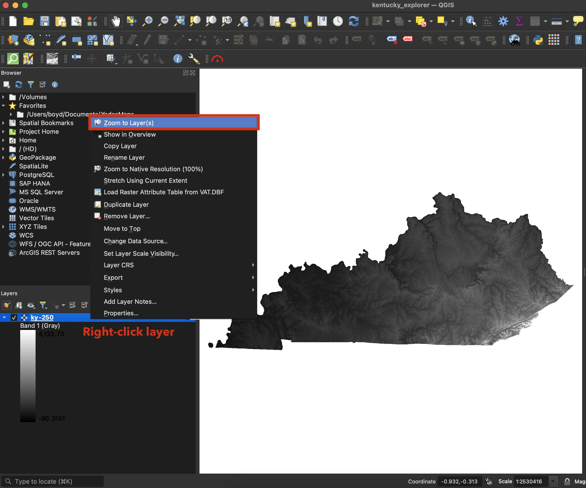
Open QGIS and zoom to elevation layer
As you can see, QGIS fits the entire state in the map canvas window. The elevation layer is a raster, which is a grid of cells, or pixels, that each have a value. In this case, the value is the elevation in feet above sea level.
Use the mouse wheel or the zoom tools to zoom in and out. You can also pan the map by clicking and dragging. See if you can find Lexington – there is only elevation to help you. One landmark to look for is the Kentucky River, which forms tall cliffs on our counties southern border.
The below images shows Lexington, the Palisades, and the Appalachian Foothills. We can determine that Lexington is higher than the river, but lower than the foothills. Can you find the highest location in the state, at 4,124 feet above sea level?
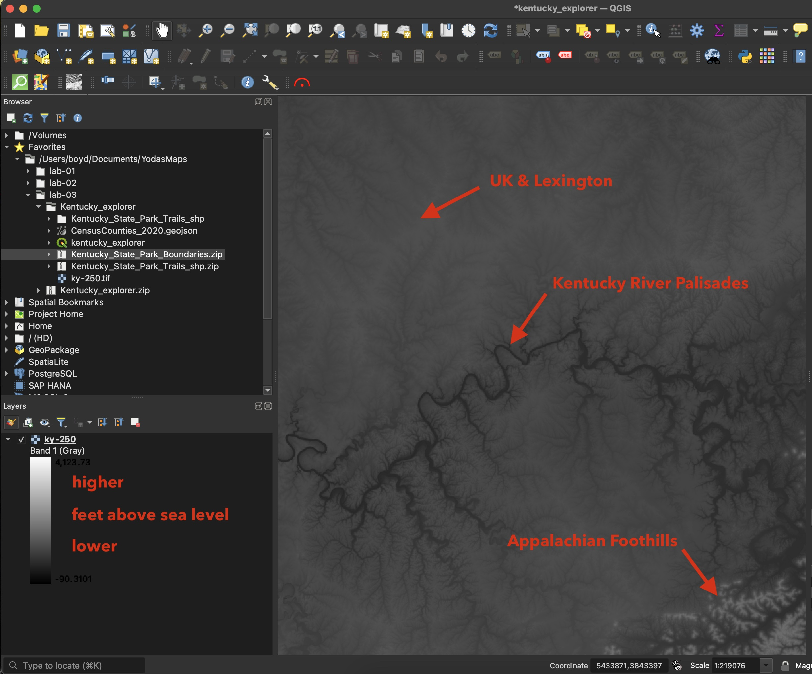
Darker or lightness of color shows elevation
Now lets add our first layer, the state park boundaries. We’ll use the drag-and-drop method.
- From the Windows File Explorer or macOS Finder, drag and drop the Kentucky_State_Park_Boundaries.zip file onto QGIS’s map canvas.
You should see the following:
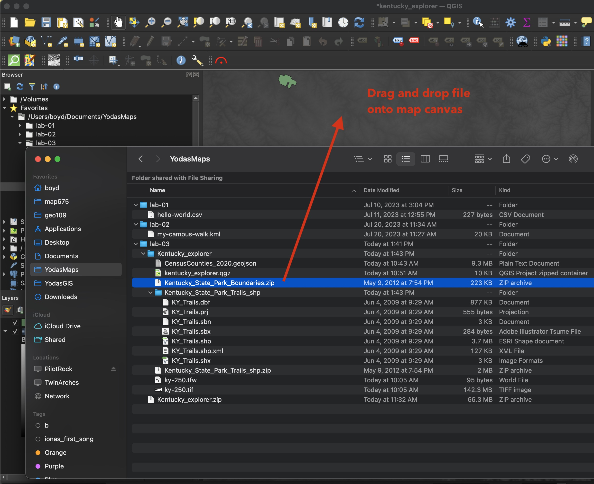
Drag and drop park boundaries layer to map canvas
Let’s find Lexington again and discover a few parks. While we can’t see through the polygons (yet), we have a good idea which parks are relatively higher and lower in elevation. This might seem like a trivial observation, but it is a fundamental concept in GIS: we can combine spatial layers to make observations about our surroundings.
Imagine this scenario. A threatened plant species is found only at high elevations in the state. Parks are often tasked with preserving biodiversity, so we might ask: where in the state are parks and do those parks have high elevations?
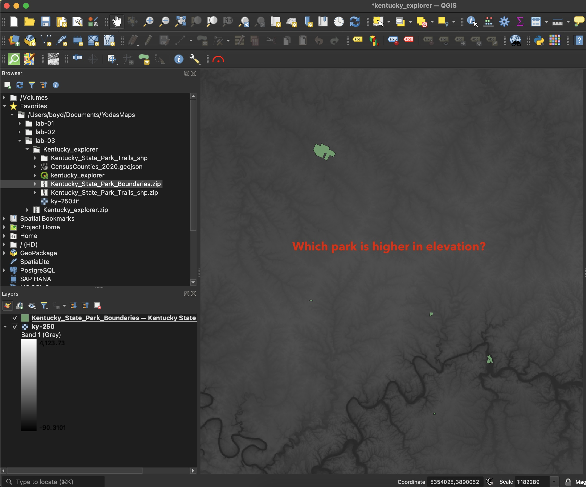
How would you determine which park is higher in elevation?
With a GIS, we could quickly find those locations in the state.
OK, let’s turn to our county polygon layer. The Shapefile format is a vector geometry format, but it can also store attributes for each feature. In this case, the attributes are demographic data from the 2020 US Census. We can use these attributes to change how the polygons look on the map. We’ll use the population attribute to change the color of each county polygon to show the number of people living in each county.
First, let’s add the county layer to the map and make sure the park layer is above the county layer.
- Drag and drop the CensusCounties_2020.geojson file onto QGIS’s map canvas.
- Sort the layers in the Layers panel so that the park layer is above the county layer.
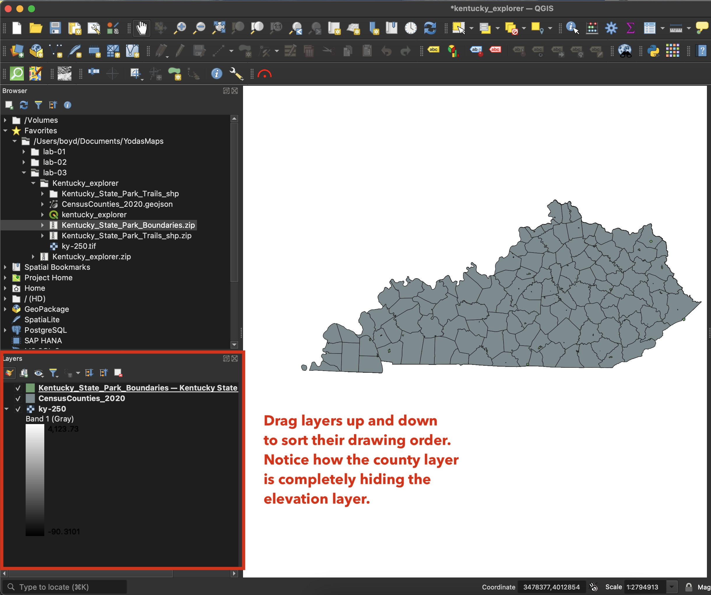
Add counties layer and sort layer drawing order
The county polygons should be colored in a single color. This is the default symbology for vector layers in QGIS. Let’s change the symbology to show the population attribute. We’ll talk more abore symbology method in the next module. For now, we’ll use a method called Graduated to color counties such that darker colors represent higher populations.
- Click on the Layer Styling to open the panel.
- Make sure that CensusCounties_2020 is selected in the styling panel.
- Change the Symbology dropdown to Graduated.
- Change the Value dropdown to Pop2020.
- Click Classify.
You might first see a red color scheme; however, that can be changed via the Color ramp dropdown. You can change it to a blue color scheme.
The following image shows the steps:
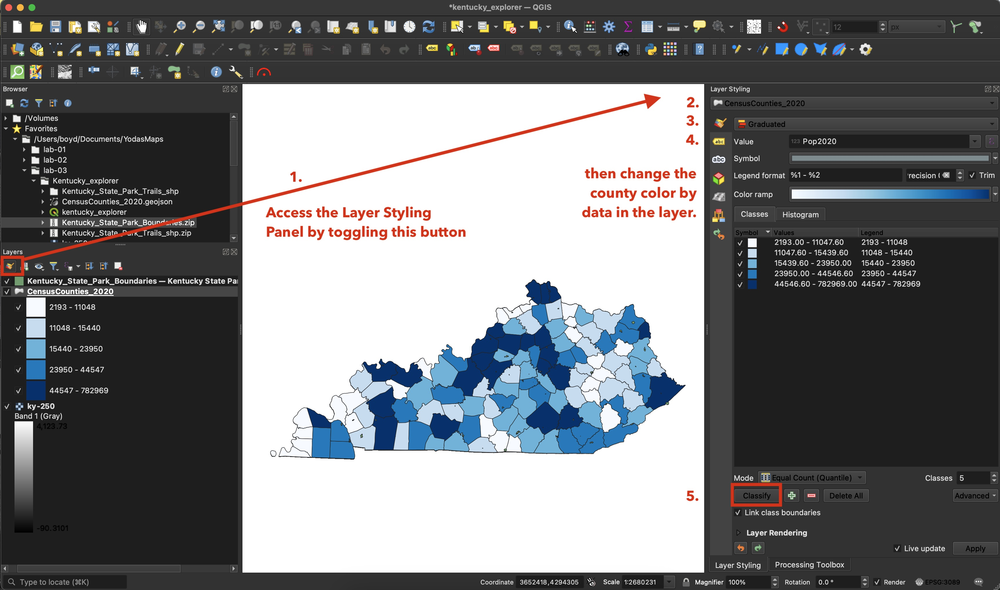
Change how the county polygons look based on value for each county
We should now see the population of each county. The darker the color, the higher the population. For example, the darkest color represents those counties that have a population between 44,547 and 782,969. There is at least one county that has a population of 2,193 – can you find it?
The park layer is a bit lost on this map. We can change its appearance to make it stand out more.
- Change the Layer Styling dropdown to Kentucky_State_park_Boundaries.
- Select Simple Fill.
- Change the Fill Color and Stroke Color to a color that contrasts well over the county layer – use your eye for design!
- Increase the Stroke width to make the parks ‘grow’ in size on the map.
The following image shows the steps:
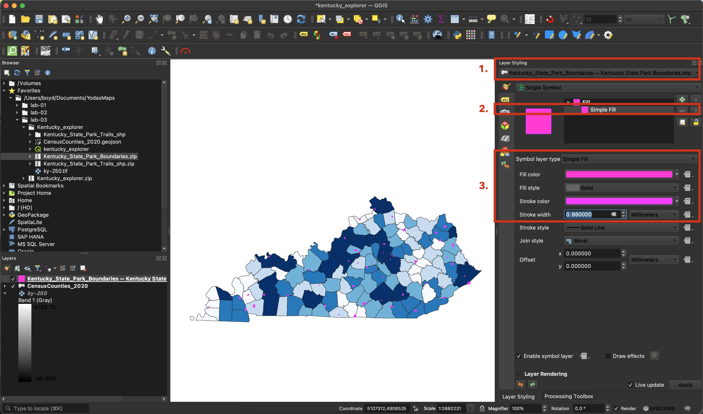
Change how the park polygons look based on common property
We’ll ask another GIS question in a moment. First, let’s prepare the map for export.
Exporting a map
We should have a map that shows county population and parks. We are not making a finished map; only showing the steps to do so. The QGIS project has a prebuilt layout with the map added to an 11 x 17 inch page. Let’s open the page.
- Click on the menu items Projects > Layouts > Kentucky to open the page.
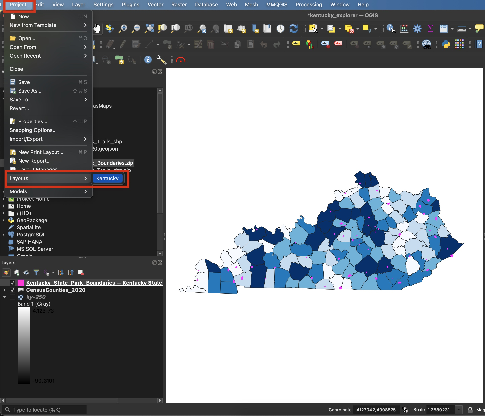
Open the QGIS Layout panel for exporting a layout
Most maps have a title, legend, scale, etc. We’ll only a text box that contains a question we might ask about our data.
- Click on the Text Tool and draw large box on the page.
- Add text in the Main Properties.
- Click the Font drowdown to customize the text appearance.
The following two images shows the steps:
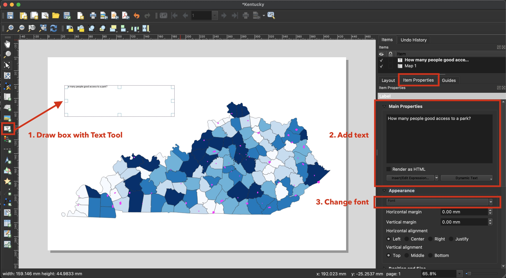
Add a text box to the layout
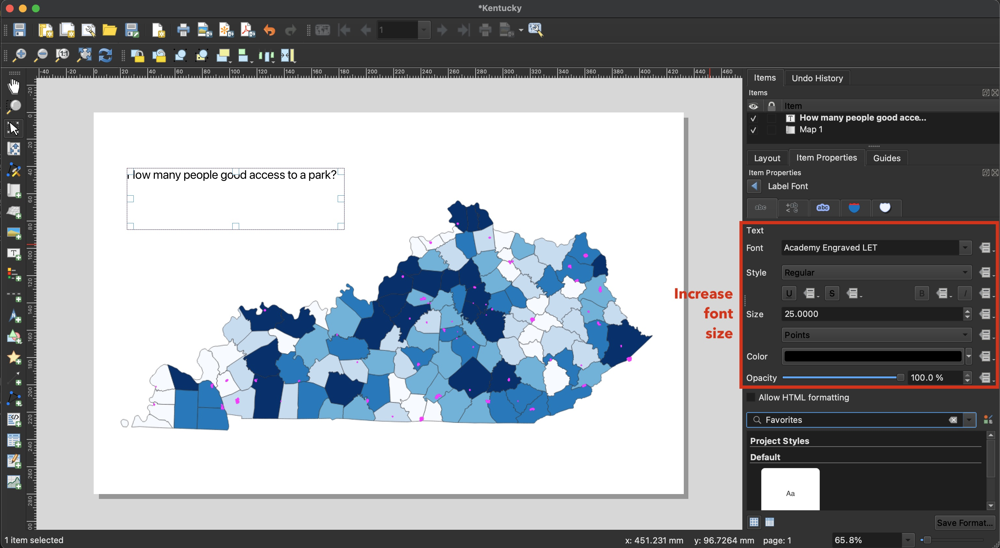
Change the text properties
When you are finished adding and customizing the text you should see the something similiar to the following:
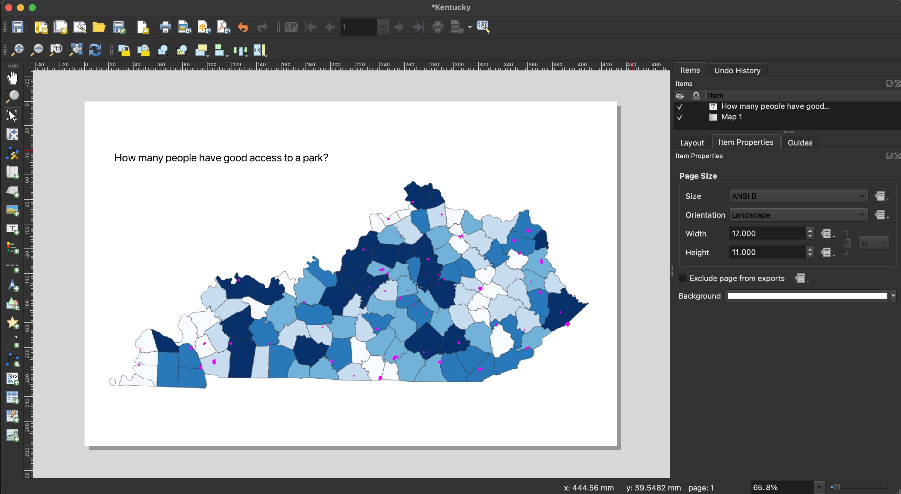
How many people have good access?
With these layers, we can start analyzing and formulating questions about their spatial relationship. In this example, we ask how many people have good access to a park? An interpretation of good access could be: where there are more people there should be more parks. Another way to express this is that for every county, there should be an equal number of park acres per person. More the better, IMHO.
We have the data to start this analysis, but we’ll leave it for another course, e.g., GEO 309. But, you should now understand the basic concept of overlaying data and analyzing the results.
Now you are ready to export the map. Export the map as a PDF file and enable the GeoPDF option. This option will allow you to easily share the map and use it in Avenza Maps on our mobile devices.
- Click on the Export to PDF button.
- Add your linkble username to the output file name.
- Enable Creat Geospatial PDF option and click Save.
The following images shows the steps:
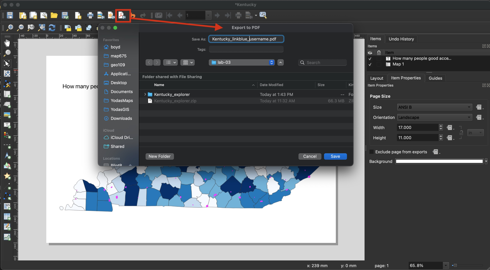
Export layout as PDF file format
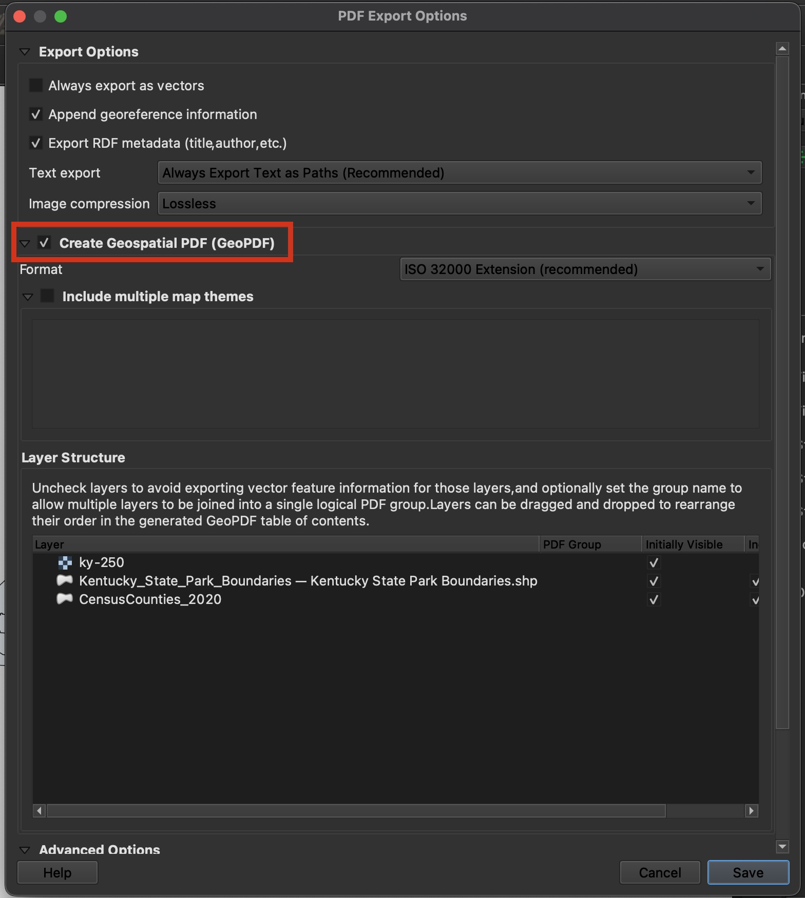
Enable GeoPDF option in export menu
Ok, you now have a PDF file that you can share with others. You can also open the PDF in Avenza Maps on your mobile device.
Video tutorial (20 min)
Assignment
Kentucky’s Creative GIS Club has a yearly competition where they invite mappers to ask interesting questions about the spatial relationship of two overlapping map layers. They have asked you to create a PDF that shows a map with two layers and one question. The question can be anything you want, but it must be answerable by the two layers you choose.
Note: You can use the map layers from this lab or find your own. If you use this lab’s layers, you should ask a different question than the one we asked in this lab.
Save your QGIS project often via the menu item Project > Save. If you want to move the project to a different computer, copy the entire folder, e.g., Kentucky_explorer.
Deliverables
Please follow these requirements for the assignment:
- Add two layers to the map, making sure that both are visible. (4 points)
- Experiment with styling of each layer to create enough contrast between the layers. For example, make one layer a cool color like blue and the other layer a warm color like yellow. (2 points)
- Add a text box to the layout and write a question that could be answered by the two layers. (2 point)
- Export the layout as a GeoPDF file.
- Name the file
cgc-{linkblue}.pdfand replace{linkblue}with your linkblue name. For example,cgc-elmus0X.pdf. (1 point) - Your TA will add one additional challenge.
Submitting the assignment
Upload your PDF file to the Module 3 assignment on Canvas by the published due date. After the submission deadline, we’ll try to answer some of the questions y’all ask during lecture.
Happy overlaying!
.